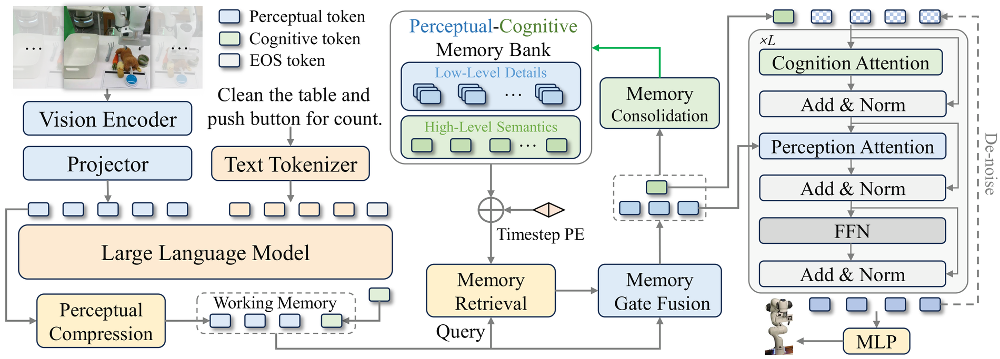
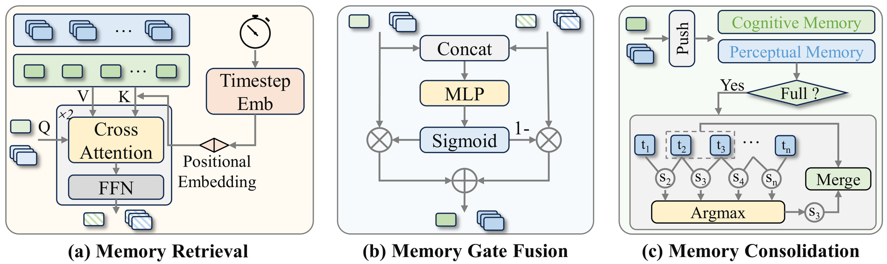

能拿到的是：一套「工作记忆 → 长时 bank → 门控回注 → 条件化扩散动作头」的完整接口，代价极小（单次推理 0.194 s vs 基线 0.187 s，显存 +0.8 GB），且在真机长时程任务上把 CogACT 的 57 分拉到 83 分；代价是它把记忆容量、写入频率、合并规则都写死成超参。
- 最小可复用件
- Perceptual–Cognitive Memory Bank 本体：双流定长条目 + 时间位置编码的 cross-attention 检索 + sigmoid 门控融合 + 溢出时「相邻最相似对取平均」的合并规则，约三层模块，可直接插在冻结 VLM 与 DiT 动作头之间。
- 主要风险
- 写入的是「已融合」表示而非原始观测，长 episode 下存在记忆漂移与误差累积；合并用平均会把决定性瞬间（例如「按钮已按」的那一帧）抹平；真机长时程用
L=256，检索成本随L×N_p线性增长而论文只报告了L=16时的延迟。 - 复现门槛
- 8×A100（FSDP，global batch 256）、约 30 GB 的 OpenVLA-7B 或 CogACT-Large 预训练权重、RLDS 格式数据集；训练是单阶段 SFT（从 7B 预训练 VLA 初始化后联合训练记忆模块与 300M 扩散头），未报告单独的 memory 预训练阶段。
1 核心摘要
论文要解决的问题很具体：机械臂的很多状态在单帧图像里不可分辨。以 Push Buttons 为例，按下前与按下后的画面几乎一致，任何只看当前帧的策略都无法判断「这一步是否已经完成」，于是会重复按、漏按或提前进入下一子目标。作者把这类任务归为非马尔可夫，并指出两条朴素路线都不好用：把连续多帧拼进 VLM 会遭遇自注意力的二次复杂度，同时破坏模型在单帧机器人数据上的预训练分布。
MemoryVLA 的答法是仿生双层记忆。第一层是工作记忆：当前帧经并行的 DINOv2 与 SigLIP 编码，再经 SE-bottleneck 压缩成 N_p=256 个感知 token p ∈ R^(256×d_p)；同一批视觉 token 投影进语言空间后与指令一起送入 LLaMA-7B，取句尾 EOS 位置的输出作为单个认知 token c ∈ R^(1×4096)。第二层是感知—认知记忆库（PCMB, Perceptual–Cognitive Memory Bank），两条流各自保留至多 L 条历史条目，一条存细粒度视觉细节，一条存高层语义摘要。
每个决策步，当前 p 与 c 作为双 query 去检索 bank：key 上叠加了 episode 内时间步的正弦编码 TE(t)，value 保持原样，两层 Transformer 的 cross-attention 得到检索结果 H^p、H^c；再用 g = σ(MLP([x, H])) 做门控，x̃ = g⊙H + (1−g)⊙x 把历史与当前自适应混合。融合后的 x̃ 既送往动作头，也直接写回 bank；当条目数超过 L 时，在每条流内部计算相邻条目的余弦相似度，把最相似的一对取平均合并。最后，p̃、c̃ 条件化一个 DiT + DDIM 的动作专家，一次输出 T=16 步、7 自由度的动作块。
判定：这是目前「在线记忆」方向上工程接口最完整的一篇——写入、检索、融合、压缩、条件化五个环节都有明确公式和消融，且推理开销几乎可以忽略；但它没有解决「记忆写什么才对」这个问题，写入的是融合后的表示、压缩靠相邻平均，长时程下更像一个带衰减的滑动摘要，而不是可回溯的事件日志。
2 记忆环节定位
命中三格半。写入触发是「部分命中」：它有明确的写入动作，但没有事件检测或子任务边界判断，写入完全由控制节拍驱动——每产生一次决策就写一对条目。这与事件式记忆（等场景变化或子目标完成再写）是两种范式，好处是不会漏写，坏处是大量冗余条目要靠溢出合并来消化。
| 维度 | MemoryVLA 的定义 |
|---|---|
| 记忆单位 | 一个决策步一对条目：感知条目 m^p_i ∈ R^(256×d_p)（256 个 token 的整块特征）与认知条目 m^c_i ∈ R^(1×4096)（单个 EOS token）。两条流独立计数、独立合并，互不混合。 |
| 输入 | 当前单帧第三人称 RGB（采集 640×480，降采样到 224×224）+ 语言指令。无腕部相机、无本体状态。 |
| 输出 | 记忆增强后的 p̃ ∈ R^(256×d_p)、c̃ ∈ R^(1×4096)；同时把同一份 p̃/c̃ 写回 bank。 |
| 交给下游 | DiT 动作专家：c̃ 与加噪动作 token 拼接，经 cognition-attention 提供语义引导；p̃ 经 perception-attention 补充细节；MSE 训练，MLP 输出 T=16 步 7-DoF 增量动作。 |
| 写入频率 | 每个 timestep（论文原话 "at each timestep"），无事件触发、无阈值、无子任务边界。实际部署按 16 步动作块执行，因此写入门槛等于一次策略调用的节拍。 |
| 读取条件 | 无条件检索：每次决策都做一次完整的 cross-attention，不存在「是否值得回忆」的判断。 |
| 容量与淘汰 | 每条流上限 L 条。仿真与真机通用任务 L=16，真机长时程任务 L=256。溢出时不算全局相似度，只在相邻条目之间找余弦相似度最大的一对并取算术平均，等价于「按时间相邻的层次化聚类」，不做 FIFO 删除。 |
| 在线性 | 因果。只用当前帧与历史条目，不使用未来帧、不使用 oracle 状态、不做离线回溯修正。训练时用 stream dataloader 按 episode 顺序取样，保证 batch 内的时序不乱序。 |
| episode 边界 | 部署接口（deploy.py）要求客户端每次请求带上 episode_first_frame 标记，首帧重置记忆；即 bank 的生命周期严格等于一个 episode，不跨 episode 复用。 |
一句话概括这三个必答项：记忆单位是「一步一对、感知 256 token + 认知 1 token」；写入频率是「每个控制步无条件写」；读取条件是「每次决策都读，query 就是当前工作记忆」。这套设定把「何时记、记什么、何时取」三个设计自由度压到只剩容量 L 一个旋钮，因此特别好接，也特别难调优。
3 问题与动机
论文的动机不是泛泛的「长时程难」，而是给了可对照的失败模式。图 1(a) 用 Push Buttons 说明：按下动作本身几乎不改变画面，因此「已经按过第一个按钮」这一事实只存在于历史里。同类问题在论文的真机长时程套件里被逐条列出：Seq. Push Buttons 要按颜色顺序按三个按钮，失败模式是顺序混淆；Change Food 要把盘中食物换掉，当第一份食物被移开后，当前帧里同时存在两样食物，单帧无法判断「下一步该抓哪个」；Guess Where 要先把方块盖住再揭开，需要跨步跟踪容器与被盖物的对应关系；Clean Table & Count 每清一个物体按一次计数器，需要显式记录「已数到几」。
作者对朴素替代方案的批评也很具体，两条都不是「效果差」，而是机制性缺陷：
帧拼接（frame stacking）
自注意力对上下文长度是二次复杂度，能塞进 VLM 的历史帧数很快到顶；更要紧的是，VLA 的机器人预训练数据是单帧分布，多帧顺序输入等于把推理时的输入分布挪出了预训练分布，微调难以完全补偿。
已有时间上下文方法
TraceVLA 把历史帧的视觉 token 一起喂进模型，RoboVLMs、CronusVLA 用滑窗聚合多帧 VLM 特征。它们的共同问题是：历史长度受显存与注意力成本硬约束、语义与细节混在同一个表征里、没有压缩机制，只能靠窗口滑动丢弃。
| 失败模式 | 现有做法为什么不够 | 本文对应设计 |
|---|---|---|
| 前后帧视觉无差异，状态不可观测 | 单帧策略没有状态量；帧拼接只能覆盖很短的窗口 | 定长 bank 跨越整个 episode 保留历史 p/c，检索时由当前 query 自己决定看哪一段 |
| 历史变长导致成本爆炸 | 拼接与滑窗的成本随窗口线性/二次增长 | 条目数被 L 截断，检索成本是 O(L·N_p)，与 episode 真实长度解耦 |
| 语义需求与几何细节需求不同 | 单一表征里两者互相干扰，压缩细节会伤精度，保留细节会淹语义 | 感知流（256 token）与认知流（1 token）分开存储、分开检索、分开门控 |
| 记忆无限增长 | FIFO 窗口会硬性丢掉最早期、往往也是唯一的关键证据 | 溢出时合并而非删除，且只合并时间相邻项，保留「什么时候发生」的粗时序 |
需要说明的是，这里的对比对象都是论文自己列出的基线（TraceVLA、RoboVLMs、CronusVLA、CogACT、π0），本文并没有与「事件式记忆」或「检索式长期记忆」类方法直接对比。

MemoryVLA 总体架构。左侧单帧 RGB 经 DINOv2/SigLIP 与 SE-bottleneck 得到感知 token（蓝），经 LLaMA-7B 的 EOS 得到认知 token（绿），二者组成工作记忆；中部 PCMB 分「Low-Level Details / High-Level Semantics」两条流，经 Memory Retrieval（key 上加 Timestep PE）与 Memory Gate Fusion 回注，再由 Memory Consolidation 写回；右侧为去噪 DiT。图注：原图取自作者 LaTeX 源码 figures/fig_2_method.pdf（对应 PDF 第 4 页 Figure 2），300 dpi 渲染后缩放至 1900 px 宽。
4 方法拆解
4.1 工作记忆：单帧、双流、定长
视觉侧走双塔：DINOv2 与 SigLIP 并行编码同一张 224×224 第三人称图，特征拼接后得到「raw visual tokens」；随后一个 SE-bottleneck 结构的感知压缩模块把它们压成 N_p=256 个感知 token p ∈ R^(N_p×d_p)。这里用 squeeze-and-excitation bottleneck 而不是直接池化，意图是保住通道间的显著性权重，让 256 个 token 尽量覆盖任务相关区域。
语言侧不新开分支：同一批 raw visual tokens 经线性层投影进语言嵌入空间，与指令 token 拼接后送入 LLaMA-7B，取 EOS 位置的隐状态作为唯一的认知 token c ∈ R^(1×d_c)，d_c=4096。作者在附录里专门做了「认知 token 数量」的消融：从 1 增到 4 反而从 71.9% 掉到 69.8%，说明单个 4096 维 EOS 已经够承载语义，多加 token 只会增加检索噪声。这条结论对复用很关键——认知流几乎不占预算。
整个模型以 7B Prismatic VLM 为基座，该基座已在 Open-X Embodiment 上预训练。动作侧是约 300M 参数的 DiT，训练时用 4 步重复扩散，推理用 DDIM 10 步、CFG 1.5。输入侧只有单帧 RGB，不用腕部视角、不用本体状态，这一点在对比实验里反而构成劣势条件下的比较（见第 5 节）。
4.2 检索：时间编码只加在 key 上
bank 的形式化很干净。两条流各自是定长序列：
M_pcmb = { m^x | x ∈ {per, cog} }，m^x = { m^x_i ∈ R^(N_x×d_x) }_{i=1..L}
其中感知条目 N_x=256、认知条目 N_x=1。每个条目携带它被写入时的 episode 时间步，用正弦编码 TE(t) 表示。检索时把感知流堆成 R^(L·N_p × d_p)、认知流堆成 R^(L × d_c)：
K^x = [m^x_1 + TE(t_1); …; m^x_L + TE(t_L)]，V^x = [m^x_1; …; m^x_L]
Ĥ^x = softmax(q^x (K^x)^T / √d_x) · V^x，q^x ∈ {p, c}
两个细节值得抄下来。第一，时间编码只进 key、不进 value。这意味着时间只参与「寻址」——决定当前该看哪一段历史——而不污染被取回的内容本身，避免把绝对时间混进动作条件里。第二，感知流与认知流是两套完全独立的 K/V 与注意力，p 只查感知 bank，c 只查认知 bank，中间没有跨流交互；跨流的汇合被推迟到动作专家里（cognition-attention 在前、perception-attention 在后）。这种「先分流再汇合」的结构让两条流的容量可以独立调。
检索层数为 2 层 Transformer（cross-attention + FFN），论文的消融显示去掉 TE(t) 会从 71.9% 掉到 69.8%，即 2.1 个点来自时间编码，说明模型确实在用「何时」而不只是「什么」。
4.3 门控融合：让历史按需覆盖当前
检索结果 H^x 不直接替换当前表征，而是逐元素门控混合：
g^x = σ(MLP(concat[x, H^x]))，x̃ = g^x ⊙ H^x + (1 − g^x) ⊙ x
这是一个逐通道的软选择：某个特征维度上如果历史更可信，门就开大；当前观测已经足够时，门自动关小。相比直接相加，门控在 Bridge 上从 67.7% 提到 71.9%（+4.2），在 LIBERO-Long-90 上从 93.8% 提到 95.6%，在真机 Clean Table & Count 上从 78 提到 84。三套数据方向一致，是这篇里最稳的一个设计。
需要注意一个容易被忽略的耦合：写回 bank 的是 x̃，不是 x。也就是说记忆里存的是「已经被历史修正过的表示」，下一步再被检索、再被融合，形成链式的自我引用。作者的意图是让记忆逐步抽象化（类似记忆巩固），代价是长 episode 下误差会沿着链累积，且一旦某一帧被错误融合，这个错误会以平均的方式扩散到相邻条目里。
4.4 巩固：溢出时合并相邻最相似对
容量规则是全篇最"可复制"的一段。设每条流上限 L，当条目数超过 L 时：
i*_x = argmax_{i=1..L−1} cos(x̃_i, x̃_(i+1))，m^x_{i*} ← ½ (x̃_{i*} + x̃_{i*+1})
注意三个约束：只在时间相邻的条目之间比较（不做全局最近邻）、每条流各自独立选自己的一对、用算术平均而不是加权或保留其一。这等价于在时间轴上做自底向上的层次聚类：越相邻、越相似的步先被压成一条，时间跨度大的条目因为不相邻而天然不会被合并。效果上既控制了容量，又保留了一个粗糙的「事件边界」结构——合并发生的位置，恰好就是语义变化最小的位置。
这套规则比 FIFO 明显更好：Bridge 上 66.7% → 71.9%，LIBERO-Long-90 上 94.9% → 95.6%，真机 Clean Table & Count 上 76 → 84。后者差距最大，说明在真机长时程里「早期关键帧被 FIFO 挤掉」确实是主要失分来源。
容量 L 不是越大越好，而且和 episode 长度强相关。附录的动作长度统计给出了原因：仿真与 LIBERO 的 episode 中位数在 117–144 步，真机通用任务过滤后中位数 81 步，而真机长时程任务过滤后平均 288 步、中位 236 步。于是仿真用 L=16（4→67.7、16→71.9、64→67.7），LIBERO-Long-90 用 16（8→94.2、16→95.6、32→95.6），真机长时程用 256（64→78、256→84、512→81）。最优 L 大致落在「能覆盖一个 episode 的关键阶段、又不超过一两百条」的区间。

记忆模块三个子过程。(a) 当前 p/c 作 Q，bank 条目加 TE(t) 作 K、原样作 V，两层 cross-attention 后接 FFN；(b) concat[x,H] 经 MLP 与 sigmoid 得门控，按元素混合；(c) 条目满后判断 Full?，在相邻条目间算相似度并由 Argmax 选出 s_3 合并。图注：原图取自作者 LaTeX 源码 figures/fig_3_modules.pdf（对应 PDF 第 5 页 Figure 3），300 dpi 渲染后缩放至 1900 px 宽。
4.5 记忆条件化的扩散动作头与训练阶段
动作头是 DiT + DDIM。每个去噪步，加噪的动作 token 先注入去噪时间步的正弦编码，再与 c̃ 拼接；随后一层 cognition-attention 用高层语义做全局引导，一层 perception-attention 用 p̃ 补充细粒度空间信息，最后经 FFN 与 MLP 输出 7 维增量动作（Δxyz、Δrpy、夹爪开合），一次预测 T=16 步。损失是对目标动作的 MSE。这个「先语义后几何」的注入顺序与人类「先决定做什么、再决定怎么够」的分工一致，也是本文与 CogACT 类「单流条件化」的主要结构差异。
训练是单阶段 SFT，没有分阶段的 memory 预训练或 co-finetune：按官方仓库说明，LIBERO 从 OpenVLA-7B（Prismatic）权重初始化，Bridge/Fractal 从 CogACT-Large 权重初始化，然后 8×A100 + FSDP、global batch 256、lr 2e-5、梯度裁剪 1.0，Bridge 训 50k 步、Fractal 80k 步、LIBERO 各 suite 20k（Long-10/90 联合 40k）、Mikasa 20k、真机 5k–20k。数据加载用 stream / grouped 采样，保证同一 batch 内的帧按 episode 时序排列，memory length 固定 16（真机长时程 256）。是否冻结 VLM、记忆模块是否单独预热，未在已核验的公开材料中确认——论文正文与附录均未给出该消融，仓库 README 也只描述单条训练脚本。
5 证据与实验
论文在 3 种机器人（WidowX、Google Robot、Franka）、6 个 benchmark、150+ 任务、500+ 变体上评测。先给协议，再给数字，避免把不同条件下的成功率混着看。
| Benchmark | 协议（论文报告） | MemoryVLA | 最强基线（同表） | 差值 |
|---|---|---|---|---|
| SimplerEnv-Bridge（WidowX，4 任务） | BridgeData v2 训练 50k 步，每 2.5k 验证，报最佳验证步；每任务 24 trials；用 CogACT 的评估脚本与 action ensemble（α=0.1，horizon 7） | 71.9%（75.0 / 75.0 / 37.5 / 100.0） | CogACT-Large 57.3（作者用官方权重重测）；π0-Beta* 68.4（取自 open-pi-zero，含本体状态） | +14.6 vs CogACT-Large；+3.5 vs π0-Beta* |
| SimplerEnv-Fractal（Google Robot，VM+VA） | RT-1 训练 80k 步，每 5k 验证，报最佳验证步；VM 77.7 / VA 67.7，合计 336 变体 | 72.7%（VM 77.7，VA 67.7） | CogACT 68.1（VM 74.8 / VA 61.3）；π0-Beta* 仅 VM 71.4，VA 未提供 | +4.6 vs CogACT；VM +2.9、VA +6.4 |
| LIBERO（Franka，5 suite，130 任务） | 每任务 50 条 demo（剔除失败轨迹），Spatial/Object/Goal 各 20k 步、Long-10+Long-90 联合 40k；每任务 50 trials；不使用 action ensemble | 96.5%（98.4 / 98.4 / 96.4 / 93.4 / 95.6） | CogACT 93.2（作者复现）；π0 94.2*、π0-FAST 85.0*（* 含腕部相机与本体状态） | +3.3 vs CogACT |
| Mikasa-Robo（Franka，5 记忆任务） | 每任务 250 demo、128×128、ΔEEF 控制，5 任务联合 20k 步，每任务 100 episodes，无 action ensemble | 41.2%（88 / 24 / 44 / 30 / 20） | π0 29.4；OpenVLA-OFT 28.4；CronusVLA 18.0（作者复现） | +11.8 vs π0；ShellGame Touch +41.0 |
| 真机通用（Franka+WidowX，6 任务） | FRANKA/WidowX + 固定 RealSense D435 前视，640×480→224×224；每任务 50–150 demo；15–25 trials（Pick Diverse Fruits 5 变体×5）；二值成功率 | 85%（87 / 80 / 80 / 93 / 87 / 84） | CogACT 76；π0 72；OpenVLA 31 | +9 vs CogACT |
| 真机长时程（6 任务） | 每任务 200–300 demo；10–15 trials；分步计分（子目标各给 30 分、全成 +10 等），非二值成功 | 83%（58 / 85 / 72 / 84 / 100 / 96） | CogACT 57；π0 52；OpenVLA 9 | +26 vs CogACT |
关于「12 个真机任务 84.0%」这个数字：摘要写的是 84.0，实际来源是两组 suite 均值 85% 与 83% 的平均；若按表内 12 个任务逐项算术平均得 83.8。它不是 12 个任务统一的二值成功率均值，因为长时程那 6 个任务用的是分步计分。引用时建议写「两组 suite 均值 85% / 83%（摘要合并记为 84.0%）」，不要写成「12 任务平均成功率 84.0%」。
消融全部在 SimplerEnv-Bridge 上做（4 任务 × 24 trials，样本量很小，单个任务 24 次试验意味着 4.2 个点就是一格）：
| 因素 | 设置 | Avg. | 读法 |
|---|---|---|---|
| 记忆类型 | 仅认知 63.5 / 仅感知 64.6 / 双流 71.9 | +7.3 ~ +8.4 | 两条流互补，缺一条都掉 7 点以上；单流时认知略逊于感知 |
| 记忆长度 | 4 → 67.7 / 16 → 71.9 / 64 → 67.7 | 倒 U 形 | 过短覆盖不到关键历史，过长引入检索噪声；与 episode 长度匹配才是正解 |
| 检索 | 无 TE(t) 69.8 / 有 71.9 | +2.1 | 时间位置编码有效但增益有限 |
| 融合 | 直接相加 67.7 / 门控 71.9 | +4.2 | 门控是最值钱的一个改动 |
| 巩固 | FIFO 66.7 / 相邻合并 71.9 | +5.2 | 合并优于丢弃，且真机上差距更大（76→84） |
效率数字来自 300 次 bf16 推理、chunk 长度 16：RTX 4090 上 0.187 s → 0.194 s（85.6 Hz → 82.5 Hz），显存 15.8 GB → 16.6 GB；HGX H20 上 0.236 s → 0.246 s（67.8 Hz → 65.0 Hz）。作者把这归因于三件事：认知条目只有 1 个 token、感知流被压到 256 个通道、合并让 bank 保持紧凑。但这张表没有标注对应的记忆长度，合理推测是 L=16 的常规设置；L=256 时的延迟与显存未报告。
不能横向比较的地方（逐条）：
1. 输入模态不对等。π0、π0-FAST 在 LIBERO 上带腕部相机与本体状态，π0-Uniform/Beta 在 SimplerEnv 上来自 open-pi-zero 复现且用 proprio；MemoryVLA 全程只有单张第三人称 RGB。作者把这点当作优势陈述，但这也意味着 96.5 vs 94.2 的分差里混着模态差异，不能读成「记忆模块净收益 2.3 点」。
2. 基线是重测的。CogACT-Large 在 Bridge 上由作者用官方权重重跑（57.3），CogACT 在 LIBERO 上也是复现结果；CronusVLA 在 Mikasa-Robo 上是作者复现（18.0）。同一张表内的数字可比，跨论文引用原始报告值不可比。
3. 报的是最佳验证步。所有 benchmark 都在「验证集最好的 checkpoint」上报成功率，且官方 README 明确提示 SimplerEnv 在不同迭代间波动很大、建议每 2.5k 步评估取最好。这是扩散策略的常见做法，但意味着数字带有选择偏差，不能与「最后一次 checkpoint」的报告值直接比。
4. 真机长时程是分步计分。83 与 CogACT 的 57 之间比的是加权进度分，不是完成率；Pick Place Order 的顺序违规会直接终止尝试，因此该项 100 分不等于 100% 完成率意义上的鲁棒。
5. 评测规模小。Bridge 每任务 24 trials、真机长时程每任务 10–15 trials，1 个 trial 就是 7–10 个点；消融中的单任务差异（如 37.5 vs 50.0）只有 3 个 trial 的差别，不宜过度解读。
6. 论文内部有一处口径不一致：正文说 Fractal 336 个变体共 2,856 trials，附录任务表处写 2,352 trials。本页只引用「336 变体」这一确定项。
另外两组证据值得单独看。一是零样本任务泛化很弱：以 Apple To Basket 为基任务，在 Eggplant/Blush To Basket、Apple To Plate 三个未见任务上分别是 3/5、2/5、2/5，均值 0.47——说明记忆带来的是「同一任务内的时间连续性」，而不是「跨任务的概念迁移」。二是OOD 里最脆的是视角：Pick Coke Can 基线 92.0%，换未见相机视角掉到 42.0%，而换背景/光照/纹理只掉 2–5 个点。这与「记忆条目里编码了绝对视角相关的空间布局」的解释相符，也提示接入自有系统时不要指望它跨相机迁移。
6 优点、局限与 VLA 适配
可迁移的部分
① 双流定长 bank 的数据结构（一条 256-token + 一条 1-token，独立计数）；② key 加时间编码、value 不加的检索写法；③ 逐元素门控融合 x̃ = g⊙H + (1−g)⊙x；④ 「相邻最相似对取平均」的合并规则，十行代码即可实现；⑤ 溢出合并优于 FIFO 这一结论在三套数据上一致，可直接作为默认选择。
不成立的前提
① 需要单帧 VLA 已有较强的基础操作能力（它从 OpenVLA/CogACT 权重起步，记忆只负责时序，不负责技能）；② 需要 episode 边界显式可得（部署接口靠 episode_first_frame 重置，连续的流式场景没有这个信号）；③ 假设关键证据在「相邻步语义相似度低」的位置——如果关键事件本身视觉变化极小（正是 Push Buttons 的情形），合并规则反而更容易把它抹掉；④ 假设单一固定视角。
延迟。论文实测 0.194 s / 0.246 s（含 10 步 DDIM 与 CFG 1.5），对应约 5.2 Hz 的策略调用频率，配 16 步动作块足以覆盖常规桌面操作。但检索成本随 L×N_p 线性增长：L=16 时 key 数是 4096，L=256 时是 65,536，是 16 倍。论文没有给出 L=256 的延迟，所以「真机长时程 83 分是在什么控制频率下取得的」这一点无法从公开材料确认。若你要在 10 Hz 以上的闭环里用 256 条记忆，必须自己测这一项，并考虑把检索降到单层或对 key 做池化。
真机闭环风险。第一，记忆只在 episode 内有效，任何「人工干预后继续」或「任务切换不重置」的场景都会污染 bank，因为写回的是融合后的表示，污染会沿链扩散。第二，合并是不可逆的：一旦两条目被平均，原始观测就永久丢失，事后无法回溯「到底是哪一帧」。第三，它不做置信度判断，即使检索到的历史完全无关，门控也只会把权重压小，不会拒绝写入——长时间空转（机械臂不动）会把大量近似重复的条目塞进 bank 并触发合并，等于用静止帧稀释了真正的关键帧。建议在接入时加一条「动作幅度低于阈值则不写入」的门槛（论文的数据预处理里已有类似思路：真机数据按末端位移 >1 cm 或旋转 >0.4 rad 筛帧，但这是离线数据筛选，不是在线写入条件）。
接到自有 VLA 上的最小改造。分四步，尽量不动主干：
| 环节 | 最小实现 | 要点 |
|---|---|---|
| ① bank 存什么 | 复用你现有 VLM 的输出：视觉侧取最后 N_p 个 patch token（或经一个 SE-bottleneck 压到 256）；语义侧取 EOS / 最后一个文本位置的隐状态 1 个向量 | 两条流分开存、分开计数；不要存原始像素，也不要存动作——论文只存表征 |
| ② 检索 query 用什么 | 就用当前步的同一组 p、c；key = 条目 + TE(t)（正弦，维度与 d 对齐），value = 条目本身 | 两层 cross-attn 足够；TE(t) 用 episode 内步数，不用墙钟时间 |
| ③ 融合与写入 | g = σ(MLP([x,H]))，x̃ = g⊙H+(1−g)⊙x；x̃ 送动作头，同时 push 进 bank | 写入放在动作块边界（每 16 步一次）而不是每个仿真步，能把写入量降一个量级且不丢关键信息（本页建议，非论文设置） |
| ④ 容量与合并 | L 按 episode 中位长度取 1/2 ~ 1 倍：桌面短任务 16，分钟级任务 128–256；满则合并相邻最相似对 | 合并前先把相似度记日志，便于事后分析「哪些帧被吃掉了」 |
如果你的动作头是 flow matching 而不是 DDIM，条件化方式可以照搬：把 c̃ 与去噪时间步嵌入拼接做全局 cross-attn，把 p̃ 做第二层 cross-attn，顺序不要反——语义在前、几何在后是这篇的明确设计。改动量约在一个模块 300 行以内，训练沿用你现有的 SFT 流程即可，不需要额外的记忆预训练阶段。
7 落地清单
- 先量 episode 长度再定
L。统计你数据集的步数中位数：<150 步用L=16，200–300 步用L=256，超过 500 步先做帧抽样（论文对真机数据按位移 >1 cm 或旋转 >0.4 rad 筛帧，把平均 1672 步降到 288 步）。验收：在验证集上对比L ∈ {8, 16, 32}或{64, 256, 512}，取倒 U 形曲线的顶点，不要直接抄数值。 - 先做「双流 vs 单流」的二分实验。仅感知 / 仅认知 / 双流三组各跑一次，预期差距 7 点以上（论文 64.6 / 63.5 / 71.9）。若你的任务里语义信息占比很低（纯几何插孔类），双流的收益可能不足以抵消复杂度，可以只留感知流。
- 把门控融合作为默认，别用相加。论文在 Bridge 上 +4.2、LIBERO-Long-90 上 +1.8、真机长时程 +6，三处一致。验收：关掉门控（改成相加）后成功率应明显下降，否则说明检索没起作用，应先查
TE(t)是否正确对齐 episode 步数。 - 合并策略从 FIFO 换成「相邻最相似对取平均」。实现只需在每条流上算
L−1个余弦相似度取 argmax。验收：真机长时程任务上应有 5–8 个点的提升（论文 76 → 84）；同时记录被合并条目的时间分布，若集中在 episode 前 20%，说明早期关键帧正在被吞，考虑把最早的若干条设为不可合并。 - 测
L=256的端到端延迟，别信L=16的 0.194 s。论文的效率表只覆盖 chunk 16 的常规设置。验收：在你的目标 GPU 上以 bf16 跑 300 次，记录 p50/p99 延迟；若 p99 超过控制周期的 50%，把检索降到单层或对 key 做时间维池化。 - 加两条论文没有的保护。① 写入门槛：末端位移低于 1 cm 且旋转低于 0.4 rad 时跳过写入，避免静止帧稀释 bank；② 重置契约：在部署接口里显式传递
episode_first_frame（论文deploy.py就是这么做的），任何人工接管后强制清空 bank。验收：连续跑 20 个 episode，确认成功率不随 episode 序号下降（若下降即为记忆污染）。
优先级建议：如果只能做一件事，做「双流 bank + 门控融合」；如果能做两件，加上「相邻合并」——这两处贡献了论文在真机长时程上相对 CogACT 的绝大部分差距（57 → 83），而时间位置编码只值 2 个点，可以最后再加。
来源：Hao Shi, Bin Xie, Yingfei Liu, Lin Sun, Fengrong Liu, Tiancai Wang, Erjin Zhou, Haoqiang Fan, Xiangyu Zhang, Gao Huang, "MemoryVLA: Perceptual-Cognitive Memory in Vision-Language-Action Models for Robotic Manipulation", ICLR 2026, arXiv:2508.19236。方法细节取自第 3 节与 Figure 2/3；主结果取自 Table 1（Bridge）、Table 2（Fractal）、Table 3（LIBERO）、Table 4（Mikasa-Robo）、Table 5（真机）；消融取自 Table 6 与附录 Table 8–12；延迟与显存取自附录 Table 7；训练超参与数据协议取自第 4.1 节与附录 C；部署接口与权重初始化方式取自官方仓库 README。
图像说明：两张图均来自作者 LaTeX 源码包（arXiv e-print）中的原始矢量图 figures/fig_2_method.pdf 与 figures/fig_3_modules.pdf，以 300 dpi 渲染为 PNG 后缩放至 1900 px 宽，未做任何重绘或裁剪，图内不含量表外的图注或正文。
相关页面：返回专题三 · 在线记忆